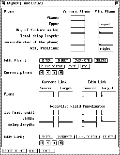

The BigNet window for Time Delay networks
(figure  ) consists of three parts: The Plane
editor where the number, placement, and type of the units are defined,
the link editor, where the connectivity between the layer is defined,
and three control buttons at the bottom, to create the network, cancel
editing, and close the window.
) consists of three parts: The Plane
editor where the number, placement, and type of the units are defined,
the link editor, where the connectivity between the layer is defined,
and three control buttons at the bottom, to create the network, cancel
editing, and close the window.

Since the buttons of this window carry mostly the same functionality as in the feed-forward case, refer to the previous section for a description of their use.